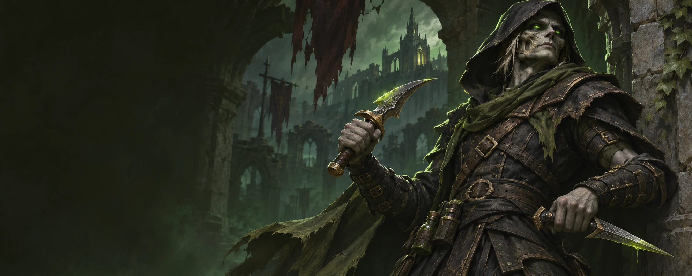

Level 1 / 60
Set your level above to tailor recommendations.
Your leveling route, combat decisions and long-term plan. Built around Sinix Grimm, the way you play.

Your route. Your builds. Your next edge. A personal field guide for the long journey.
Set your level above to tailor recommendations.
Built around your established playstyle, rather than a generic class tier list. Use the two-spec sections for decisions and the tracker to remember what you have actually completed.
Sinix Grimm remains your Forsaken Rogue. Will of the Forsaken offers strong matchup utility; Orc is not a mandatory reroll. Your class experience is more important than an unproven racial DPS edge.
Optimize for weapon quality, sustained uptime, consistent builders and finishers, dependable interrupts, and multi-target value when Blade Flurry is available.
Choose engagements, leverage control, create openings, and reset unfavorable fights. New Ghostly Strike mechanics deepen dagger gameplay without removing Ambush weapon restrictions.
A complete set of level bands with suggested Horde routes, training checks and Forever dungeon opportunities. Choose quests by live difficulty and travel cost.
Forever beta-client trainer and recipe ranks. Confirm costs, availability and class quests in the live client. Talent-granted abilities belong in the planner.
| Level | Ability / rank | Learning note |
|---|
Sword fundamentals, updated for Poised, Shank, the redesigned Combat tree, and Forever's revised threat environment.
Favor a strong main-hand sword for Sinister Strike's weapon-based damage. The off-hand needs to contribute useful damage, Shank value, and poison/proc uptime; a faster off-hand is often useful, but do not assume speed always beats DPS.
Weapon recommendations are principles, not tested Forever BiS lists.
Use the current Forever talent calculator to resolve point gates and prerequisites. Do not paste an October 15 build blindly.
Open current talent tree ↗Start full Enter from maximum Energy to take advantage of Poised. Choose an appropriate opener for the fight; a sword loadout does not support Ambush.
Build efficiently Use Sinister Strike and weave in Shank when Energy generation is valuable. Avoid wasting Energy at cap.
Spend deliberately Use Eviscerate on enemies about to die. Maintain Slice and Dice on longer fights; Rupture may be useful depending on target and poison interactions.
Control incoming damage Use Kick, Gouge, Riposte, Evasion, Sprint, and Vanish rather than treating every pull as a DPS race.
Mind threat Let the tank establish a lead. New tank threat bonuses help, but do not make you immune to aggro.
Maximize uptime Keep Slice and Dice running on durable targets, maintain auto-attacks, and avoid wasted Energy and Combo Points.
Time damage windows Use Blade Flurry for suitable multi-target pulls, and align Adrenaline Rush with fights long enough to realize its value.
Do your utility job Sap when safe, interrupt priority casts, use poisons tailored to the encounter, and respect enemy mechanics.
Ask which mob is being controlled before Blade Flurry. Agree an interrupt target, mark Sap and coordinate Expose Armor if assigned. Stronger Feint threat reduction helps, but still watch aggro.
The editable Combat plan progresses from Efficient Strikes through Precision and leveling defense to Blade Flurry, Flash of Steel and Adrenaline Rush. It is a legal theorycraft starting point, not a measured best build.
Inspect the Combat plan →Your preferred dagger build: control-first engagements, planned burst, resets, and situational openers. Designed for contested leveling zones and organized PvP alike.
Ambush: main-hand dagger + behind target + Stealth, unless the Stealth requirement is waived by Ghostly Strike. A sword cannot Ambush.
Cheap Shot: choose when you need control. Garrote: choose sustained bleed pressure when it fits your reset plan. Its inspected Forever tooltip does not list a silence. Sap: control before combat when the situation permits.
Ghostly Strike → Ambush: a Stealth-free follow-up within seven seconds, with dagger and behind-target conditions still relevant.
Boot Knife: improves Shank Combo Point generation. Death Mark: delayed damage after six seconds; opponents may mitigate, cleanse, or disrupt the setup.
Scout health, nearby teammates, pet positions, and escape routes. Do not waste Stealth by attacking the first red nameplate.
Choose Cheap Shot, Garrote, or Ambush based on the matchup. Reserve at least one control or reset tool for the opponent's response.
Use Kidney Shot, Gouge, Blind, Vanish, Sprint, and terrain deliberately. A disengage is a win when the alternative is dying to reinforcements.
Maintain behind-target discipline and a dagger main hand.
Manage diminishing returns and enemy trinkets instead of stacking control blindly.
Identify the spell or window that actually matters.
Plan escape routes before engaging. Pets, DoTs, and flare-type detection can complicate resets.
A situational answer to Fear, Charm, and Sleep—not general stun immunity.
Choose available poisons to solve the matchup; verify exact ranks and effect availability in-game.
Watch the opponent’s response before spending everything. Ghostly Strike opens a seven-second Stealth exception, but Ambush still needs a dagger, position, range and Energy. Death Mark is delayed and a Curse; plan around dispel access instead of assuming unanswerable burst.
Bleeds, damaging poisons and area procs can conflict with damage-breaking control. Check your damage before a Gouge or Blind reset. Keep an escape corridor and reserve Will of the Forsaken for an applicable Fear, Charm or Sleep.
Practice sequences are tactical recommendations. Live diminishing-return and spell interactions still need client testing.
All three current Rogue trees. Inspect every rank, spend legal points, save named loadouts and copy portable build codes.
Plan level is separate from your character level. Talented shifts the first points earlier; the level-60 cap stays 51. Select only ranks earned on your account.
Editable theorycraft starting points; no simulated best-build claim.
Each row needs five points per tier in lower rows. Prerequisites must be maxed. Refunds that invalidate a build are blocked. Choose Inspect Mode for all ranks.
Click to Add · Shift-click or Right-click to Remove · Hover or Focus for Rank Details
Snapshot-specific codes do not import directly into the game. Progress backup includes all named builds.
A broad level 1–60 catalog, including common, green, rare and epic candidates. Filter your preferred weapons, inspect their full tooltips and separate Forever records from Classic references.
Weapon damage, speed, stats and effects all matter. A slower sword can improve weapon-based builders. Tooltip DPS alone does not model special attacks, poisons, procs or uptime.
Shank gives it an active role. Application opportunities and weapon damage can pull in different directions; compare your actual setup instead of imposing a universal speed rule.
Record your current items →A practical notebook for every playable class, world survival and battleground decisions. No win-rate claims or guaranteed control scripts.
Avoid dueling during a dangerous quest pull. Recover off the road, watch choke points and communicate a camped objective. After a death, change approach or regroup instead of repeating the same prepared ambush.
Stealth provides information and position, not immunity to detection. Match Horde and your PvP ruleset when organizing help.
The announced map is 15v15 for levels 30–60, with four capture points and a central flag; 2,000 points wins. Scout rotations, report defender numbers and disrupt reinforcements. A long isolated duel can cost the objective even when you win it.
Official return overview ↗Honor buys rewards; Rank Points advance rank. Rank 2 unlocks a trinket, rank 4 a necklace and rank 14 weapons. Epic set upgrades require a blue item plus rank-gated Emboldened Seals. Check your in-game pane for the weekly cap and next purchase.
Official PvP progression ↗The nine new five-player dungeons and announced level-60 raids, with saved first-run checks and personal loot notes.
Advertised ranges guide planning; they are not asserted as hard entry requirements. This board covers the new dungeons, not every returning instance.
Official dungeon overview ↗Schedule the elite quests and travel early. The official chain takes you through Goretooth in Kargath, Eitrigg and Thrall, Rend, Rexxar, Myranda’s disguise work, Emberstrife’s tests, then Drakkisath. Follow current quest objectives instead of skipping steps from an old walkthrough.
Every raider must carry the Drakefire Amulet; equipping it is unnecessary. Coordinate fire-resistance preparation with your raid leader. Exact resistance targets and final boss plans need live evidence.
Official raids & attunement ↗Useful gear principles and an editable loadout ledger. These are not fabricated endgame BiS lists; those require verified item databases and raid data.
A personal utility choice supported by Forever’s confirmed professions and Engineering Reagent Bot camp feature. Mining supplies materials. This is not a measured mandatory Rogue DPS pairing; check each gadget in the live client.
A reasonable choice for consumable independence and steady material value. The exact profitability depends on server supply, demand, and recipe availability.
| Slot | Current / target item | Notes |
|---|
Your entries are stored on this device only. Use Backup to export a portable JSON copy.
Profession choices, Forever camping, supplies, enchants and a practical spending plan. Choose utility you will actually use.
A Basic Campfire initially supports three contributed features, one per player. Sit or craft for one minute to receive their benefits. Starter profession features begin at skill 20; corresponding class buffs can exclude the same camp benefit. Camps can be attacked on a PvP ruleset.
Engineering’s Reagent Bot supplies reagents. Skinning’s Camp Chair offers a critical-strike buff. Choose a contribution for utility the group lacks, then move before the road becomes an ambush.
Official Camping & professions ↗Gather along your existing route. Change zones when competition or travel makes a material inefficient. Count actual sales rather than assuming every auction sells.
Enter gold, including decimals. Auction proceeds are before fees. Leave unsold stock out. Fees and other expenses are subtracted once.
Conservative templates with copy controls. A syntax review and website test do not prove in-game behavior; mark a macro tested after checking it in your client.
#showtooltip Kick /stopcasting /cast Kick
Simple interrupt; no target-switch tricks.
#showtooltip Sap /stopattack /cast [@mouseover,harm,nodead][] Sap
Attempts a valid mouseover target, otherwise normal target.
#showtooltip Blind /stopattack /cast [@mouseover,harm,nodead][] Blind
Preserve control without manually changing targets.
#showtooltip Vanish /stopattack /cast Vanish
Does not remove harmful DoTs or enemy detection.
#showtooltip Will of the Forsaken /cast Will of the Forsaken
Racial control break; not an answer to stuns.
#showtooltip Stealth /stopattack /cast Stealth
Stealth remains subject to its normal combat restrictions.
#showtooltip Kick /cast [mod:shift,@focus,harm,nodead][] Kick
Hold Shift to attempt Kick on a hostile living focus; otherwise normal target. Confirm focus support and range in the client.
Keep interrupts and escapes within reach. Choose modifiers that work with movement and your accessibility needs. Suggested assignments are editable and save locally.
Check off practical milestones. Save notes and a talent-build URL for each spec. Your progress stays in the browser unless you export a backup.
Links are user-supplied; this guide does not claim these are tested optimal builds.
Autosaves on this device. Export a backup before clearing browser data or switching devices. Restore imports a previously exported JSON file.
Mechanical changes verified against Blizzard's November 2 development notes. Final talent trees can change again; treat guides using October beta trees cautiously.
At maximum Energy outside combat, your next Energy ability costs 10 less. This rewards patient, full-Energy openers.
Rank 1: costs 5 Energy, has a 10-second cooldown and generates 15 Energy with an off-hand strike that cannot miss. Rank 2, learned at 44, generates 25 Energy. Rank 1 has a net baseline gain of 10 Energy. Rank 2’s specific cost and cooldown still need live confirmation.
Improves Shank's Energy generation and reduces its cooldown. Efficient Strikes now reduces both Sinister Strike and Hemorrhage Energy costs.
For seven seconds, your next Ambush or Garrote can be used without Stealth. Ambush still requires a main-hand dagger and positioning behind the target.
Boot Knife can award two Combo Points from Shank. Death Mark is a delayed-damage Curse finisher; its six-second delay creates counterplay.
Deadly Poison and Instant Poison's Attack Power coefficients doubled in the final notes. The correct poison setup still depends on fight length and PvP matchup.
Main-hand dagger required for Ambush.
Still requires getting behind your target.
Ghostly Strike removes Stealth requirement for the next Ambush within seven seconds, not the dagger/position rules.
Dated sources, visible confidence and a path to future revisions. This is a research snapshot, not a live patch feed.
Published by Blizzard.
Client / databaseInspectable snapshot that may lag live.
SuggestedRoute, tactics or theorycraft.
Client test pendingGameplay confirmation needed.
Talent and trainer data adapted from Talents Forever, generated November 3, client 1.60.1.70753, under CC BY 4.0. Rogue data is reduced and reformatted; game names, logos and tooltip text belong to Blizzard Entertainment. Unofficial personal fan guide; no endorsement implied.